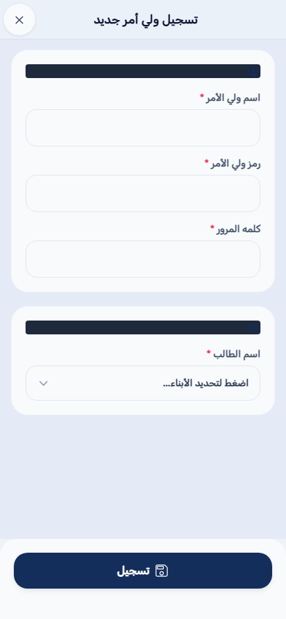
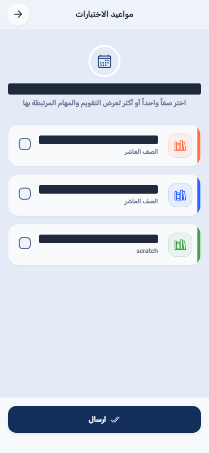
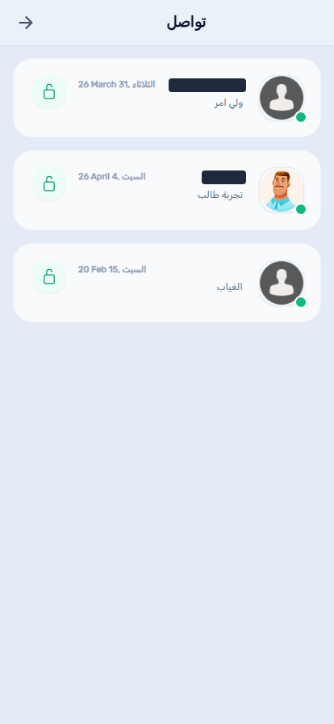
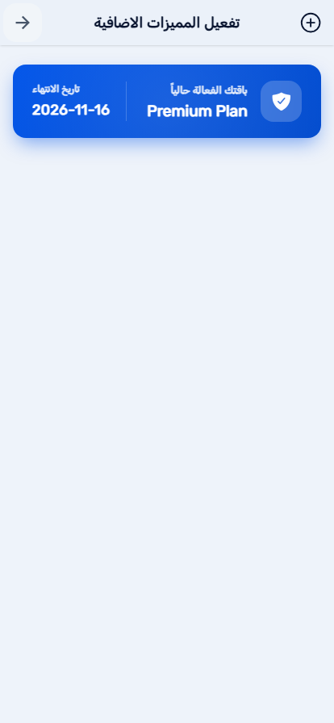
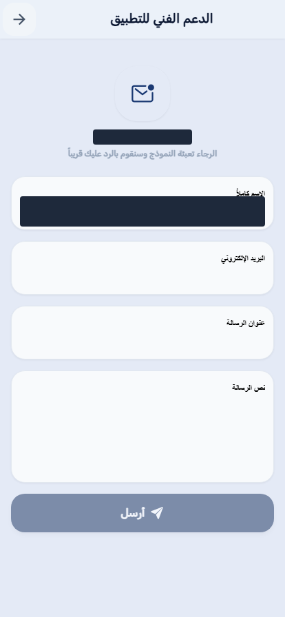

منصة بصمة التعليمية
تطبيق بصمة هو التطبيق المرافق للوحة بصمة للإدارة، لوحة تحكم المدرسة الإلكترونية على الويب. كل ما تُعِدّه المدرسة في لوحة الإدارة — قوائم الطلاب والمعلمين، الجداول الدراسية، الاختبارات، السجلات السلوكية، الأخبار — يصبح شيئاً يمكن للمعلم أو المشرف التربوي أو ولي الأمر أو الطالب رؤيته والتفاعل معه من هاتفه مباشرة، دون الحاجة لمتصفح على جهاز حاسوب. يكيّف التطبيق قائمته بالكامل حسب من سجّل الدخول: لا يرى ولي الأمر أبداً أدوات حضور المعلم، ولا يرى الطالب أبداً شاشات قوائم المشرف. تطبيق واحد مثبَّت، وست تجارب مختلفة تماماً حسب الحساب.
الحساب نفسه يعمل في كل مكان يُتاح فيه بصمة: التطبيق على الهاتف، ولأدوار الطاقم ومشرف المدرسة أيضاً، لوحة بصمة للإدارة على الويب، وكلاهما يقرأ ويكتب في بيانات المدرسة نفسها لحظياً.
أدخل اسم المستخدم وكلمة المرور في شاشة تسجيل الدخول واختر تسجيل الدخول. تُصدر بيانات الدخول من إدارة مدرستك — لا يوجد تسجيل ذاتي عام لحسابات الطاقم أو المشرف التربوي أو المشرف (يمكن دعوة أولياء الأمور والمعلمين عبر رابط تسجيل يشاركه مشرف المدرسة، انظر 4.3). يتذكر التطبيق الحسابات التي سجّلت الدخول إليها من قبل، ويعرضها كصف تبديل سريع أعلى نموذج تسجيل الدخول في المرة القادمة التي تفتحه فيها، بحيث يمكن لجهاز عائلي مشترك التنقل بين حساب ولي أمر وحساب طالب دون إعادة كتابة كلمة المرور في كل مرة.

تطبيق بصمة ثنائي اللغة بالكامل، ويستخدم العربية افتراضياً عند التثبيت الأول. افتح القائمة الجانبية (الأيقونة في زاوية معظم الشاشات) واستخدم قائمة تحديد اللغة بالقرب من الأعلى. يتغير التطبيق بالكامل فوراً — بما في ذلك اتجاه التخطيط؛ تُعرض العربية من اليمين إلى اليسار، والإنجليزية من اليسار إلى اليمين، وصولاً إلى الجهة التي تُفتح منها القائمة نفسها. يُحفظ الاختيار لكل جهاز.
يغطي مساران للتنقل التطبيق بأكمله. شريط تبويبات سفلي (لمن لديه واحد من الأدوار) يبدّل بين المجموعة الصغيرة من الشاشات التي تستخدمها باستمرار — قائمة الفصول، الأخبار، الرسائل، وما شابه — دون مغادرة تلك المجموعة أبداً. كل شيء آخر — جدولك الخاص، الإعدادات، الأجهزة، وكل شاشات الإدارة — يعيش في القائمة الجانبية، التي تُفتح من الأيقونة في الرأس. اختيار عنصر من القائمة الجانبية يستبدل الشاشة الحالية بالكامل، لذا استخدم القائمة مرة أخرى (أو إيماءة الرجوع في جهازك) للعودة إلى شاشة شريط التبويبات بعد ذلك.
بقية هذا الدليل منظّمة حسب الدور، لأن هذا هو تنظيم التطبيق نفسه — افتح الفصل المطابق لدورك (معلم، مشرف تربوي، مشرف مدرسة، ولي أمر، أو طالب) بدلاً من القراءة من البداية للنهاية. بعض الشاشات مشتركة بين أكثر من دور من أدوار الطاقم (تقرير الطلاب، مثلاً، يظهر لكل من المشرف التربوي ومشرف المدرسة) وموثَّقة مرة واحدة في كل فصل تظهر فيه، لأن القائمة المحيطة — وما هو منطقي فعله بعد ذلك — يختلف حسب الدور.
تطبيق المعلم مبني حول شيء واحد: الفصول الموجودة في جدولك الدراسي الخاص. كل ما في هذا الفصل مقتصر على تلك الفصول — لا يمكنك رؤية أو التفاعل مع قائمة فصل لست مُسنَداً لتدريسه.
الشاشة الرئيسية للمعلم تسرد كل فصل مُسنَد إليك حالياً، كل منها كبطاقة تحمل اسم الفصل وأيقونة المادة. اختر فصلاً لفتح قائمة طلابه للحصة الحالية. هذه الشاشة أيضاً هي ما يفتحه التطبيق فور تسجيل الدخول.

فتح فصل يعرض قائمة طلابه للحصة النشطة حالياً، مع زر تحديد حاضر أو غائب بجانب كل طالب. إذا كان جدول مدرستك يمنحك أكثر من حصة مع هذا الفصل اليوم، يتيح لك محدد الحصص أعلى الشاشة تبديل الحصة التي تسجّل لها. يتيح لك زرا الإجراء السريع تحديد الفصل كله حاضراً أو غائباً بضغطة واحدة قبل إجراء تعديلات فردية، ويعرض عداد أسفل الشاشة كم طالباً تم تسجيله من إجمالي الفصل حتى الآن. اختر حفظ بعد اكتمال تسجيل الحضور؛ قد تُغلق نافذة زمنية تحددها المدرسة الحصة أمام أي تعديل إضافي بعد انتهائها، وتُعرض كعدّاد تنازلي حي أثناء بقائها مفتوحة.

اختر اسم الطالب أو صفه من القائمة (وليس صورته، والتي تفتح عرض صورة أكبر بدلاً من ذلك) لفتح ملفه الكامل: مستواه السلوكي ولقبه الحاليين، تفصيل مهارات التميّز عبر خمس سمات متتبَّعة، إجمالي النقاط المكتسبة، وأي ملاحظات مسجَّلة عليه. هذه شاشة للقراءة فقط بالنسبة للمعلم — المستويات السلوكية والنقاط نفسها تُحدَّد من لوحة بصمة للإدارة، وليس من هذه الشاشة.

جدولك الأسبوعي الكامل عبر كل فصل تدرّسه، مجمّعاً حسب اليوم ويعرض القاعة والمادة ورقم الحصة لكل جلسة. افتحه من عنصر جدولي الدراسي في القائمة الجانبية.

عندما تسجّل مدرستك غياب معلم آخر، يعرض نظام تناوب المعلمين البدلاء حصصه المفتوحة على المعلمين المؤهلين المتاحين — بمن فيهم أنت — كطلبات تغطية.

قائمة للقراءة فقط بجلسات الاختبار المُسند إليك مراقبتها — التاريخ والمادة والفصل والحصة والقاعة. على عكس طلبات التغطية، لا تحتاج مهام المراقبة لقبول أو رفض؛ فهي تعيين ثابت يُنشأ من شاشة جدولة الاختبارات في لوحة بصمة للإدارة، وهذه الصفحة موجودة فقط حتى تكون قائمة مهامك في متناول يدك دائماً.

تبويب المتابعة (أيقونة التحليلات في الشريط السفلي) يفتح قائمة اختيار لكل فصل؛ اختيار فصل يفتح قائمة متابعته، حيث تسجّل درجات دورية مقابل حقول المتابعة المخصصة لمدرستك — مثل إكمال الواجب أو المشاركة أو سجل القراءة — إدخال واحد لكل طالب. هذا منفصل عن الحضور ونقاط السلوك: حقول المتابعة هي ما تحدده مدرستك بالضبط، وتُهيَّأ من لوحة بصمة للإدارة.

إعلانات مدرستك، وموجز إشعاراتك الشخصي، وأي نشرات مُعمَّمة، لكل منها تبويب أو عنصر قائمة خاص به. الأخبار والإشعارات تُفتح من شريط التبويبات السفلي؛ النشرات تعيش في القائمة الجانبية تحت "متابعه النشرات". تظهر علامة غير مقروء على تبويب الأخبار كلما وُجد شيء جديد.


تصفّح مواد الفيديو والمستندات التي نشرتها مدرستك، منظَّمة حسب الفئة. لا يظهر عنصر القائمة هذا إلا بعد أن يكون لمدرستك باقة نشطة (غير مجانية) — انظر 4.9 لكيفية إدارة مشرف المدرسة لذلك.

أدر ملفك الشخصي — الاسم واسم المستخدم والبريد الإلكتروني والهاتف — إضافة إلى تفضيلات الإشعارات ومظهر التطبيق من عنصر الإعدادات في القائمة الجانبية. الأجهزة تسرد كل جهاز مسجَّل دخوله حالياً لحسابك، مفيدة للتأكد من أن هاتفاً قديماً قد سُجِّل خروجه فعلاً. يحتوي القسم نفسه من القائمة أيضاً على روابط سريعة لـ"من نحن" و"تواصل معنا" إذا احتجت التواصل مع دعم بصمة مباشرة.


يرى المشرفون التربويون عرضاً إشرافياً عبر الفصول بدلاً من امتلاك قائمة فصل واحدة — يمكنك مراجعة الحضور والسلوك والتأخير لأي فصل مُسنَد إليك الإشراف عليه، دون أن تكون معلم المادة الخاص بأي فصل منها.
الشاشة الرئيسية للمشرف التربوي تسرد كل فصل تشرف عليه، بنفس تخطيط البطاقات الذي يراه المعلم. اختيار فصل يفتح قائمته في عرض مراجعة وليس عرض تسجيل حضور — أنت تتحقق من سجل أدخله معلم الفصل نفسه بالفعل، ولست تُنشئ سجلاً جديداً.

الطلاب المسجَّلون متأخرين في الطابور الصباحي، عبر كل فصل تشرف عليه، تُفتح من تبويب قائمة التأخير في شريط التبويبات السفلي (لا يراها المعلمون، الذين يرون فقط حضور فصولهم الخاصة بدلاً من ذلك).

تعمل تماماً مثل شاشة متابعة المعلم (2.7)، لكن عبر كل فصل تشرف عليه بدلاً من فصل تدرّسه: اختر فصلاً من تبويب المتابعة، ثم سجّل أو راجع الدرجات مقابل حقول المتابعة المخصصة لمدرستك لقائمة ذلك الفصل.

يُفتح من عنصر إدارة التقارير في القائمة الجانبية. هذا تلخيص أوسع من قائمة التأخير وحدها — حصر لكل طالب للحضور والسلوك والوضع مقابل حدود الإنذار عبر الفصول التي تشرف عليها، مفيد لرصد نمط قبل أن يحتاج تقرير إنذار رسمي من لوحة بصمة للإدارة.

عرض عبر الفصول لكل طالب مسجَّل غائباً اليوم، عبر كل الفصول التي تشرف عليها. لا يظهر عنصر القائمة هذا إلا إذا فعّلته مدرستك للمشرفين التربويين (ظهور "قائمة طلب تعديل غياب" إعداد لكل مدرسة) — إن لم تره، اسأل مشرف مدرستك عن تفعيله.

قائمة مشرف المدرسة على الهاتف تعكس أهم الأدوات الحساسة للوقت من لوحة بصمة للإدارة — تبقى اللوحة الكاملة على الويب المكان المناسب للعمل الجماعي مثل الاستيراد وتوليد الجداول والتقارير التفصيلية، لكن تعديلات القوائم اليومية والاستعلامات السريعة كلها هنا أيضاً، لأي وقت تكون فيه بعيداً عن المكتب. هذا هو حساب مشرف المدرسة نفسه الذي يوثّقه دليل لوحة بصمة للإدارة؛ التطبيقان يتشاركان تسجيل دخول واحد ومجموعة بيانات واحدة.
افتح اداره حسابات المعلمين من القائمة الجانبية لرؤية كل حساب معلم في مدرستك، قابل للبحث بالاسم. اختيار أحدهم يفتح ملفه للتعديل؛ زر + في الرأس يفتح نموذج إضافة معلم، حيث يُحدَّد اسم مستخدم وكلمة مرور مؤقتة للحساب الجديد. يُستخدم النموذج المشترك نفسه لإنشاء أي دور من أدوار الطاقم يمكن لهذا التطبيق إنشاءه (معلم، مشرف تربوي، مشرف) — يُختار الدور أعلى النموذج.


افتح اداره حسابات الطلاب من القائمة الجانبية لنفس نوع القائمة القابلة للبحث، مقتصرة على الطلاب. من هنا يمكنك فتح ملف طالب، والوصول لنموذج إضافة طالب للدور المالك للقائمة الذي يمكنه إضافة طلاب.

افتح اداره حسابات اولياء الامور من القائمة الجانبية. هذه الشاشة في الأساس قائمة انتظار لأولياء الأمور الذين سجّلوا عبر رابط تسجيل ولي الأمر العام الخاص بمدرستك وينتظرون ربطهم بحساب ابنهم — وافق على أحدهم من هنا، أو استخدم زر + لإضافة حساب ولي أمر يدوياً وربطه بطالب بنفسك.


من قائمة فصولك، افتح قائمة الخيارات (الأيقونة أعلى الشاشة، بجانب أدوات البحث/إعادة الترتيب) واختر إنشاء صف جديد. يفتح هذا نفس نموذج إنشاء الفصل الذي تستخدمه لوحة بصمة للإدارة، بحيث يمكن إضافة شعبة جديدة فور اتخاذ القرار، دون الحاجة للتبديل إلى متصفح.

افتح قائمة المستخدمين من القائمة الجانبية لدليل مدمج واحد لكل حساب في مدرستك — معلمون ومشرفون تربويون وأولياء أمور وطلاب معاً، بدلاً من الشاشات المقسَّمة حسب الدور أعلاه. زر + نفسه هنا يفتح نموذج إضافة المستخدم المشترك الموصوف في 4.1.


نفس التقرير الموصوف للمشرفين التربويين في 3.4 — حصر لكل طالب للحضور والسلوك والوضع مقابل حدود الإنذار — لكن عبر مدرستك بأكملها بدلاً من مجموعة فرعية من الفصول المُشرَف عليها، يُفتح من عنصر إدارة التقارير في القائمة الجانبية.

افتح مواعيد الاختبارات من القائمة الجانبية لعرض تقويمي لكل جلسة اختبار مجدولة في مدرستك. استخدمه للتحقق السريع من تقويم الاختبارات دون فتح شاشة تخطيط مراقبة الاختبارات الأكمل في لوحة بصمة للإدارة.

افتح التواصل مع المؤسسة التعليمية من القائمة الجانبية لرؤية والرد على نفس قناة المراسلة التي يستخدمها أولياء الأمور للتواصل مع مدرستك (انظر 5.4 لجانب ولي الأمر من هذه المحادثة).

افتح تفعيل المميزات الاضافية من القائمة الجانبية لمراجعة باقة مدرستك الحالية، أو تفعيل مميزات إضافية، أو استبدال كود قسيمة صدر لمدرستك — حقل القسيمة مدمج مباشرة في هذه الشاشة نفسها، وليس صفحة منفصلة. الميزات المقفلة خلف تفعيل المميزات الإضافية (التعليم الإلكتروني واحدة منها، انظر 2.9) تُفتح تلقائياً لكل حساب في المدرسة فور التفعيل؛ لا يوجد شيء لتهيئته لكل مستخدم على حدة.

خط مباشر مع فريق دعم بصمة نفسه، يُفتح من عنصر الدعم الفني للتطبيق في القائمة الجانبية — منفصل عن تواصل ولي الأمر، الذي يتواصل مع طاقم مدرستك أنت لا مع بصمة.

حساب ولي الأمر يتمحور حول أبنائك أنت لا حول قائمة فصل — كل ما في هذا الفصل مقتصر على الأبناء المرتبطين بحسابك من قِبل إدارة مدرستك.
الشاشة الرئيسية لولي الأمر تسرد كل ابن مرتبط بحسابك، كل منهم كبطاقة تعرض مستواه السلوكي الحالي ولقبه وعدد أيام غيابه المستمر. هذه أيضاً الشاشة التي يعيدك إليها التطبيق بعد فتح أي عنصر من القائمة الجانبية، لأن حساب ولي الأمر ليس له ما يعادل قائمة الفصول ليكون شاشته الرئيسية.

اختر بطاقة الابن لفتح ملفه الكامل — نفس عرض المستوى السلوكي واللقب وتفصيل المهارات الذي يراه المعلم لطلابه (2.3)، مقتصراً على ذلك الابن وحده.

يُفتح من شريط التبويبات السفلي. إذا كان لديك أكثر من ابن مرتبط بحسابك، تتيح لك قائمة اختيار تحديد جدول أي ابن تريد عرضه؛ مع ابن واحد يُفتح مباشرة إلى جدوله الأسبوعي.

قناة مراسلة مباشرة مع مدرسة ابنك، تُفتح من شريط التبويبات السفلي. تظهر علامة على التبويب كلما كان هناك رد غير مقروء بانتظارك. يقرأ طاقم المدرسة هذه الرسائل ويرد عليها من شاشة تواصل ولي الأمر الخاصة بهم (4.8).

إعلانات مدرستك وموجز إشعاراتك الخاص، كلاهما يُفتح من شريط التبويبات السفلي.


حساب الطالب للقراءة فقط بالكامل وخاص بك تماماً — لا شيء في هذا الفصل يتيح لك رؤية بيانات طالب آخر، ولا شيء هنا شيء تعدّله أنت بنفسك.
جدولك الأسبوعي الخاص، مجمّعاً حسب اليوم — الشاشة التي يفتحها حساب الطالب افتراضياً من شريط التبويبات السفلي، وتعرض المادة والقاعة والحصة لكل جلسة.

الألقاب وسلاسل الإنجاز التحفيزية التي حققتها عبر نظام النقاط، إلى جانب مستواك السلوكي الحالي وتفصيل عبر نفس مسارات المهارات الخمس التي يراها المعلم في ملفك.

أي ملاحظات سجّلها معلم أو مشرف تربوي على سجلك الخاص، في قائمة مستمرة واحدة.

حصر غيابك المستمر مقارنة بحدود الإنذار الخاصة بمدرستك — نفس التقرير الذي يراجعه المشرف التربوي أو مشرف المدرسة عبر فصل كامل (3.4)، مقتصراً على سجلك الخاص.

إعلانات مدرستك وموجز إشعاراتك الخاص.


تحقق مرة أخرى أن اسم المستخدم وكلمة المرور مكتوبان تماماً كما صدرا — أسماء المستخدمين حساسة لحالة الأحرف. إن استمرت المشكلة، تواصل مع إدارة مدرستك — لا يوفر التطبيق إعادة تعيين ذاتية لكلمة المرور.
لم يتم إسنادك بعد إلى قائمة فصل. تواصل مع إدارة مدرستك للتأكد من تعيين فصلك.
تواصل مع إدارة مدرستك — يمكنها إعادة تعيين الحصة من شاشة المعلمين البدلاء في لوحة بصمة للإدارة.
يوجد داخل القائمة الجانبية (الأيقونة في زاوية معظم الشاشات)، وليس في شاشة تسجيل الدخول نفسها — سجّل الدخول أولاً، ثم بدّل اللغة. التبديل مرة واحدة أثناء تسجيل الدخول يغيّر أيضاً اللغة التي تعرضها شاشة تسجيل الدخول نفسها في المرة القادمة التي تسجّل فيها الخروج.
روابط الابن بولي الأمر تُدار من جهة المدرسة — إما بالموافقة على طلب تسجيل معلّق (4.3) أو بإعدادها مباشرة — وليس من تطبيق ولي الأمر نفسه. اطلب من إدارة مدرستك التأكد من إعداد الرابط بشكل صحيح.
لا يظهر التعليم الإلكتروني إلا بعد أن تُفعّل مدرستك المميزات الإضافية. تفعيل المميزات الإضافية نفسها أداة خاصة بمشرف المدرسة فقط — لا يراها المعلمون أو المشرفون التربويون أو أولياء الأمور أو الطلاب أبداً، بحسب التصميم.
بعض عناصر القائمة تُفعَّل لكل مدرسة بدلاً من أن تكون متاحة في كل مكان — اسأل إدارة مدرستك عمّا إذا كانت هذه الميزة مفعَّلة لدورك.
| المصطلح | المعنى |
|---|---|
| قائمة الفصول | الشاشة الرئيسية للمعلم أو المشرف التربوي، تسرد الفصول المُسنَدة إليه (تدريساً أو إشرافاً، على التوالي). |
| طلب التغطية | تعيين تدريس بديل يجب على المعلم قبوله أو رفضه. |
| مهمة المراقبة | تعيين ثابت لمراقبة اختبار؛ على عكس طلب التغطية، لا يحتاج رداً. |
| حقل المتابعة | عنصر متتبَّع مخصص لكل مدرسة (مثل الواجب أو المشاركة) يسجّله المعلم أو المشرف التربوي لكل طالب، منفصل عن الحضور ونقاط السلوك. |
| تقرير الطلاب | حصر لكل طالب للحضور والسلوك والوضع مقابل حدود الإنذار، متاح للمشرفين التربويين (فصولهم المُشرَف عليها) والمشرفين (على مستوى المدرسة). |
| تواصل ولي الأمر | قناة المراسلة داخل التطبيق بين ولي الأمر وطاقم المدرسة. |
| تفعيل المميزات الإضافية | شاشة مشرف المدرسة لتفعيل مميزات إضافية أو استبدال كود قسيمة؛ ميزات مثل التعليم الإلكتروني تُفتح تلقائياً للمدرسة بأكملها فور التفعيل. |
| المشرف التربوي | طاقم إشرافي يشرف على حضور وسلوك عدة فصول دون أن يكون معلم مادة أي منها. |